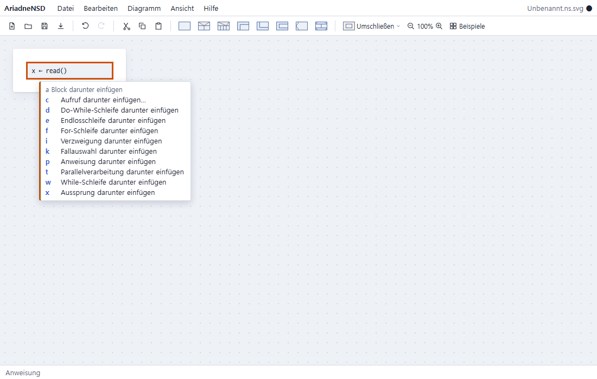
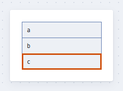
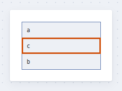
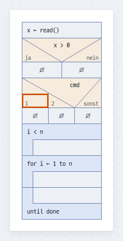
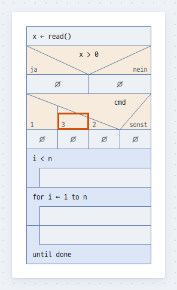
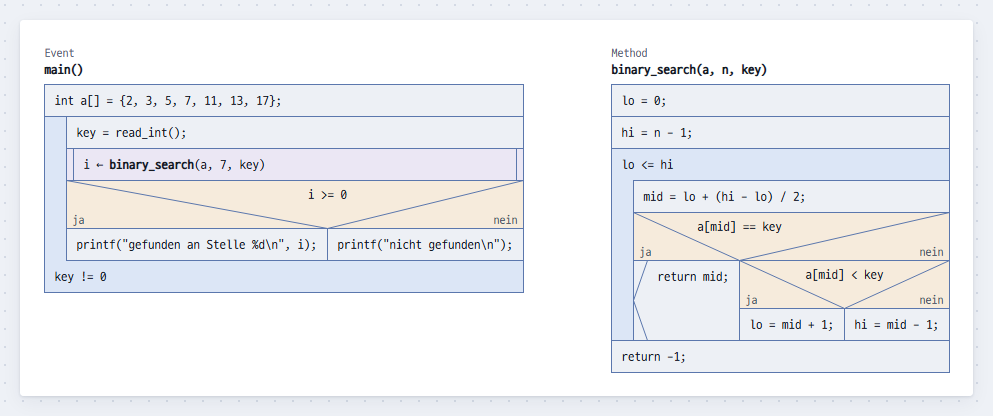
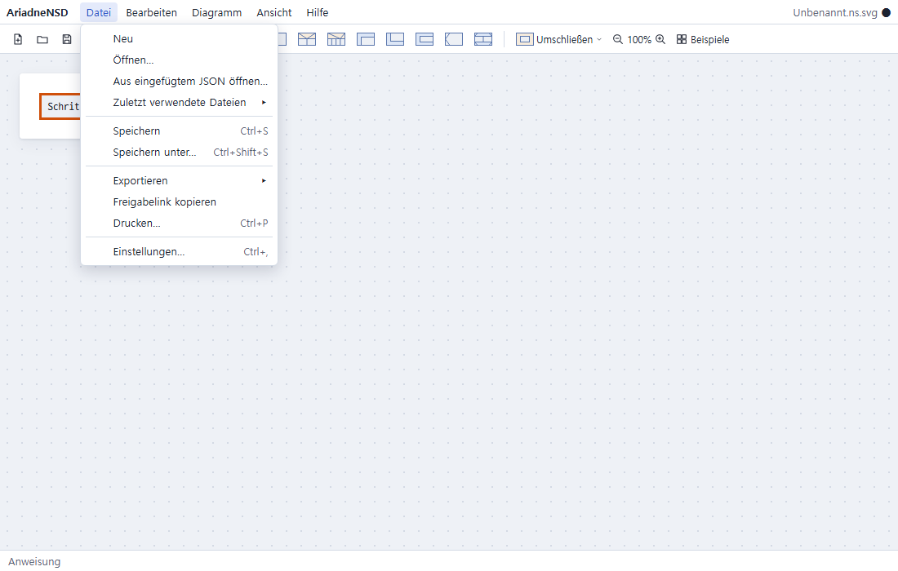
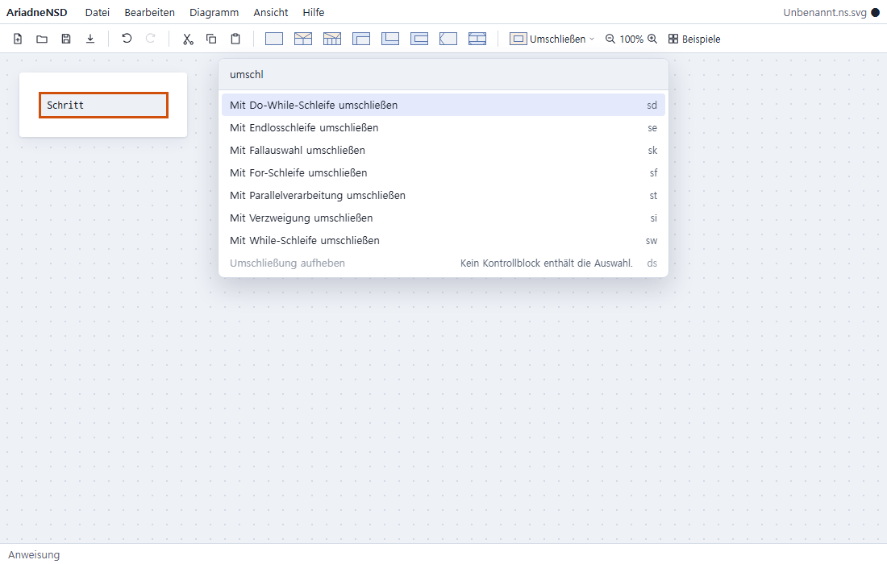
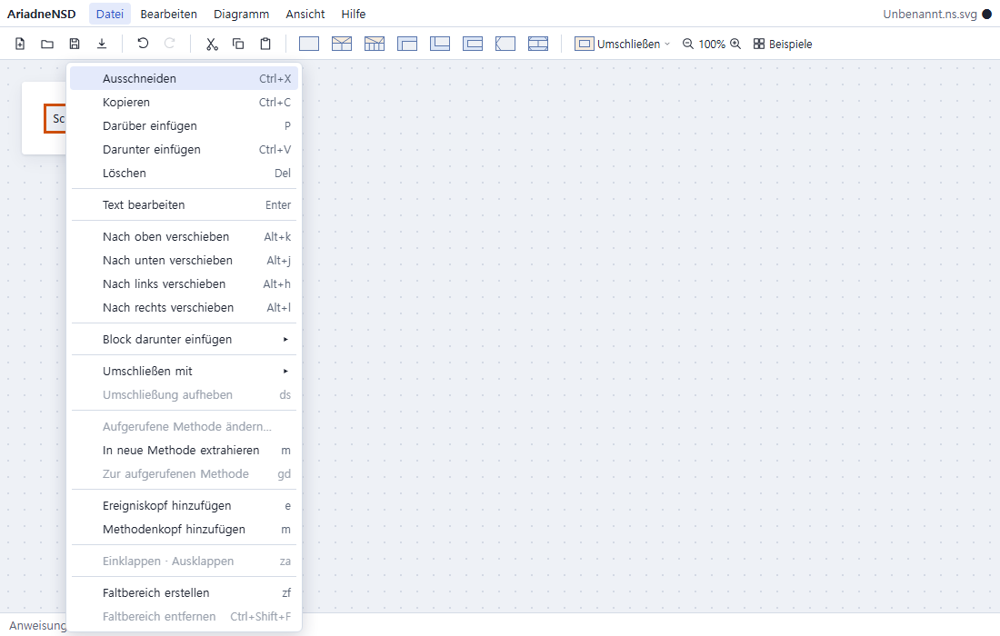

Zeichenfläche: Hier zeichnen Sie. Mehrere Diagramme werden automatisch angeordnet.
Statusleiste: Was ausgewählt ist, und Meldungen. Das ● neben dem
Dateinamen oben rechts bedeutet: Es gibt nicht gespeicherte Änderungen.
Blöcke
In einen Block schreiben Sie, was Sie möchten: Code oder ganz normale Sätze. Die Bedingung einer
Verzweigung, einer Fallauswahl oder einer Schleife steht in ihrer Bedingungszelle (oben, bei der
Do-While-Schleife unten). Text wird nicht von selbst umbrochen; lange Zeilen brechen Sie mit
Shift+Enter um. Das ∅ in einer leeren Zelle bedeutet „hier
steht nichts“. Eine Parallelverarbeitung kann in ihrem oberen Streifen Text haben (oder keinen);
eine Endlosschleife hat keinen Text.
Ein Aussprung in einer Verzweigung innerhalb einer Endlosschleife, danach eine
Parallelverarbeitung mit zwei Zweigen
Block
Bedeutung
Kennbuchstabe
Anweisung
Ein Arbeitsschritt
p (nur zum Einfügen: ap = o)
Verzweigung
Zwei Zweige, ja und nein
i
Fallauswahl
Mehrere Zweige je nach Wert; der sonst-Zweig steht ganz rechts
k
While-Schleife
Prüft zuerst die Bedingung und wiederholt dann
w
For-Schleife
Wiederholt eine festgelegte Anzahl von Malen (sieht aus wie die While-Schleife; der Text
in der Bedingungszelle unterscheidet sie). Nicht in der Symbolleiste: Verwenden Sie Tasten
oder Menüs
f
Do-While-Schleife
Läuft einmal durch und prüft dann die Bedingung
d
Endlosschleife
Wiederholt ohne Bedingung. Hinaus führt ein Aussprung in ihrem Inneren
e
Aussprung
Verlässt eine Schleife oder eine Methode vorzeitig; sein Text sagt, wie
(break, continue, return x). Er kann nichts
umschließen, daher nur zum Einfügen
x (nur zum Einfügen)
Parallelverarbeitung
Ihre Zweige laufen gleichzeitig, und alle sind beendet, bevor der nächste Block beginnt.
Die Zweige haben keine Beschriftung; es sind zwei oder mehr
t
Aufruf
Ruft eine Methode desselben Dokuments auf
c
Die Kennbuchstaben folgen auf die Einfügetasten (aA) und die
Umschließen-Taste (s).
Bewegen und auswählen
Die Pfeiltasten bewegen sich in der Reihenfolge, die Sie in der Zeichnung sehen. Zusammen
auswählen lassen sich nur benachbarte Blöcke auf derselben Ebene. Shift+Klick auf
einen Block in einer anderen Tiefe erweitert die Auswahl auf den kleinsten Bereich, der beide
enthält.
Aktion
Vim-Taste
Standardtaste · Maus
Nach oben · unten · links · rechts
kjhl
↑↓←→, Klick, Mausrad
Nach oben · unten, einen Kontrollblock als Ganzes
{}
Ctrl+↑↓
Zum nächsten Zweig
Ctrl+←→
Erster / letzter Block des Diagramms
gg / G
Mehrere Blöcke auswählen
V, dann jk
Shift+↑↓, Shift+Klick
Eine Zweigbeschriftung auswählen (bei der Parallelverarbeitung den Zweig)
k auf dem ersten Block des Zweigs
↑ auf dem ersten Block des Zweigs, Klick auf die Beschriftung (bei der
Parallelverarbeitung auf den oberen Streifen über dem Zweig)
Auswahl aufheben
EscEsc
Klick auf die leere Zeichenfläche
Blöcke einfügen, Text bearbeiten
Ein neuer Block kommt unter die Auswahl, mit Shift darüber. Ist ein leerer Block
(∅) ausgewählt, tritt der neue Block an seine Stelle. Die Textbearbeitung (bei
einem Kontrollblock die seiner Bedingungszelle) beginnt sofort. Mit Enter oder
Esc beenden Sie die Bearbeitung.

Drücken Sie a und warten Sie einen Moment: Die möglichen nächsten Buchstaben
erscheinen direkt unter der Auswahl.
Aktion
Vim-Taste
Standardtaste · Maus
Eine Anweisung darunter / darüber einfügen
o (oder ap) / O (oder Ap)
Das Anweisungssymbol in der Symbolleiste / Shift+Klick
Einen anderen Block darunter / darüber einfügen
a / A + Kennbuchstabe
Sein Symbol in der Symbolleiste / Shift+Klick, oder das Symbol zwischen Blöcke
ziehen und ablegen
Textbearbeitung beginnen
i, cc (leeren und neu schreiben)
Enter, F2, Doppelklick
Bearbeitung beenden
Esc
Enter
Aufruf: Ergebnisfeld ↔ Argumentfeld
Tab
Verschieben, kopieren, löschen
Beim Verschieben tauscht die Auswahl den Platz mit dem Block darüber oder darunter. Wird sie
über das Ende hinaus verschoben, verlässt sie den Block, der sie enthält. Um sie in einen
anderen Block zu setzen, ziehen Sie sie dorthin und legen sie ab, oder Sie schneiden sie aus und
fügen sie ein. Aus einem anderen Programm kopierter Text wird als eine Anweisung je Zeile
eingefügt; ist der Text ein ganzes AriadneNSD-Dokument (Modell-JSON oder ein Freigabelink),
fragt die App, ob sie es stattdessen als neues Dokument öffnen soll (Von einer KI zeichnen lassen). In ein anderes Programm kopierte Blöcke werden zu eingerücktem Text; ein Aufruf lautet wie
gezeichnet Ergebnis ← Name(Argumente).

c ist ausgewählt→

Alt+k verschiebt es nach oben
Aktion
Vim-Taste
Standardtaste · Maus
Nach oben · unten verschieben (Zweige nach links · rechts)
Umschließen setzt die ausgewählten Blöcke in einen neuen Kontrollblock (in den ja-Zweig einer
Verzweigung, in den ersten Zweig einer Fallauswahl). Die Umschließung aufheben entfernt die
Hülle und behält, was darin steht. Die Zweige einer Fallauswahl fügen Sie wie Blöcke ein und
löschen sie ebenso, während ihre Beschriftung ausgewählt ist. Der sonst-Zweig steht immer ganz
rechts. Die Zweige einer Parallelverarbeitung nehmen dieselben Tasten an, wenn der Zweig
ausgewählt ist, und es bleiben immer mindestens zwei. Beim Umschließen mit einer
Parallelverarbeitung kommt die Auswahl in ihren ersten Zweig.

Die Beschriftung 1 der Fallauswahl ist ausgewählt→

o fügt rechts davon einen Zweig mit der Beschriftung 3 ein
Aktion
Vim-Taste
Standardtaste · Maus
Umschließen
s + Kennbuchstabe
Ctrl+Klick auf ein Blocksymbol, „Umschließen“ in der Symbolleiste, oder das
Symbol auf die Blöcke ziehen und ablegen
Umschließung aufheben (den nächsten Kontrollblock um die Auswahl)
Zweigbeschriftung bearbeiten (von überall im Zweig)
L
Doppelklick auf die Beschriftung
Wenn Sie an der Beschriftung einer Verzweigung einen Zweig einfügen, fragt die App, ob sie die
Verzweigung in eine Fallauswahl umwandeln soll. Werden der ja- und der nein-Zweig einer
Verzweigung vertauscht, bleibt die Bedingung gleich, und damit ändert sich die Bedeutung: Passen
Sie die Bedingung an.
Einklappen
Ein langes Diagramm klappen Sie zum Lesen ein. Wählen Sie einen Kontrollblock und drücken Sie
f (oder za): Sein Inneres wird zu einer Zeile „⋯ n Blöcke“ eingeklappt.
Verzweigung und Fallauswahl werden Zweig für Zweig eingeklappt; ein Zweig, der nur aus einer
Anweisung besteht, wird nicht eingeklappt. Auf einem Block klappt die Taste das Nächstliegende
ein, das ihn enthält (einen Faltbereich, einen Zweig). Wählen Sie eine eingeklappte Zeile und
drücken Sie die Taste noch einmal, um sie auszuklappen.
Ein Faltbereich fasst einige Blöcke unter einem Namen zusammen. Wählen Sie die Blöcke und
drücken Sie zf: Sie werden zusammengefasst, sofort eingeklappt, und Sie werden nach
einem Namen gefragt. Drücken Sie einfach Enter, dann erscheint „Text des ersten
Blocks und n weitere“ als Name. Ausgeklappt zeigen ein dicker Rahmen und ein Namensstreifen, wo
er endet; die Streifen schalten Sie mit Ansicht › Faltbereiche anzeigen aus. Was eingeklappt ist
und die Namen werden in der Datei gespeichert, und die gespeicherte Zeichnung sieht aus wie auf
dem Bildschirm. Ein- und Ausklappen lassen sich rückgängig machen, je ein Schritt.
Aktion
Vim-Tasten
Standardtasten · Maus
Einklappen · ausklappen
za, f
Klick auf das Dreieck ▸▾, Doppelklick auf eine eingeklappte
Zeile
Nur ausklappen / nur einklappen
zo / zc
Faltbereich erstellen
zf
Shift+F
Faltbereich entfernen (die Blöcke bleiben)
zd
Ctrl+Shift+F
Faltbereich umbenennen (sein Streifen oder seine eingeklappte Zelle ausgewählt)
i, cc
Enter, Doppelklick
Die Pfeiltasten überspringen eine eingeklappte Zelle oder Zeile wie einen einzigen Block. Vom
ersten Block eines ausgeklappten Faltbereichs aus wählt ↑ seinen Namensstreifen.
Etwas Eingeklapptes wird als Ganzes verschoben, kopiert und gelöscht.
Ereignisse, Methoden und mehrere Diagramme
Ein Dokument kann mehrere Diagramme enthalten. Mit einem Kopf wird ein Diagramm zu einem
Ereignis (etwas, das von außen angestoßen wird, etwa durch einen Interrupt oder einen
Timer) oder zu einer Methode (etwas, das ein Aufruf aufruft). Die Anordnung ist
automatisch: Ereignisse links, Methoden rechts. Der Name eines Aufrufs folgt dem Methodenkopf;
jeder Aufruf hat eigene Argumente und ein eigenes Ergebnis.
Wählen Sie Blöcke und drücken Sie m: Sie werden zu einer neuen Methode, und an
ihrer Stelle bleibt ein Aufruf zurück, der sie aufruft. Geben Sie den Namen der neuen Methode
ein und drücken Sie Enter, um zu diesem Aufruf zurückzukehren. In einem Diagramm ohne
Kopf zeigt m eine kleine Liste, in der Sie „In neue Methode extrahieren“ oder
„Methodenkopf hinzufügen“ wählen. Ein einziges Rückgängig stellt die Blöcke wieder her.
Wählen Sie einen Aufruf und drücken Sie f: Die Blöcke der Methode werden
an Ort und Stelle angezeigt (mit violettem Rahmen und Streifen). Nur die Ansicht ändert
sich; die angezeigten Blöcke lassen sich daher auswählen und kopieren, aber nicht bearbeiten.
Beim ersten Öffnen übernimmt die Anzeige, was in der Methode eingeklappt ist; danach lässt
Einklappen eines Faltbereichs, eines Zweigs oder eines Schleifenrumpfs hier die Methode und
andere Aufrufe unverändert, und Einklappen in der Methode lässt diesen Aufruf unverändert.
Wählen Sie angezeigte Blöcke und drücken Sie zf für einen Faltbereich nur an diesem
Aufruf. ds (Umschließung aufheben) ersetzt den Aufruf durch eine Kopie der Blöcke der
Methode (das Gegenteil von Extrahieren). Um eine Funktion aufzurufen, die das Dokument nicht
enthält, wählen Sie in der Liste „Mit geschriebenem Namen aufrufen“ und geben ihren Namen ein.
Um sie später zu zeichnen, drücken Sie gd auf diesem Aufruf (oder „Methode
erstellen“): Eine Methode mit diesem Namen wird erstellt, jeder Aufruf mit diesem Namen ruft sie
auf, und die Auswahl springt zu ihrem Kopf. Wird eine Methode gelöscht, behalten die Aufrufe,
die sie aufgerufen haben, ihren Namen als Aufruf mit geschriebenem Namen. Um eine Methode ganz
aufzulösen, wählen Sie auf einem Aufruf oder auf ihrem Kopf „Methode einsetzen und löschen“ (im
Kontextmenü oder im Menü Diagramm): Jeder Aufruf, der sie aufruft, wird zu einer Kopie ihrer
Blöcke, die Methode wird gelöscht, und ein einziges Rückgängig nimmt alles zurück. Eine Methode,
die sich selbst aufruft, lässt sich so nicht einsetzen.

Das Beispiel „Binäre Suche“: Ein Aufruf im Ereignis main() ruft die Methode
binary_search auf
Aktion
Vim-Taste
Standardtaste · Maus
Ereignis- / Methodenkopf hinzufügen oder seine Art ändern (m auf einem Kopf)
e / m
Das Menü Diagramm
Die ausgewählten Blöcke in eine neue Methode extrahieren
m
Das Menü Diagramm, das Kontextmenü
Neues Ereignis- / Methodendiagramm
E / M
Das Menü Diagramm
Einen Aufruf einfügen (die Methode aus einer Liste wählen)
ac
Kontextmenü › Block darunter einfügen
Die aufgerufene Methode ändern („Mit geschriebenem Namen aufrufen“ steht ebenfalls in
dieser Liste)
Das Menü Diagramm, das Kontextmenü
Zur aufgerufenen Methode (von einem angezeigten Block zu seinem eigenen Block; bei einem
Aufruf mit geschriebenem Namen wird die Methode erstellt)
gd
Das Menü Diagramm, das Kontextmenü
Methode erstellen (bei einem Aufruf mit geschriebenem Namen)
gd
Das Menü Diagramm, das Kontextmenü
Einen Aufruf an Ort und Stelle öffnen · schließen
f, za
Klick auf das Dreieck ▾ in seinem Streifen
Einen Aufruf durch die Blöcke der Methode ersetzen (Umschließung aufheben)
ds
Diagramm › Umschließung aufheben
Methode einsetzen und löschen (jeder Aufruf wird zu den Blöcken der Methode, und die
Methode verschwindet)
Das Menü Diagramm, das Kontextmenü (auf einem Aufruf oder einem Methodenkopf)
Vorheriges / nächstes Diagramm
[[ / ]]
Ctrl+Shift+←→
Diagramme umordnen (Kopf ausgewählt)
Alt+hl
Alt+←→
Diagramm löschen
Shift+Delete
Die Form des Kopfes („Wie ein Titel“ oder „Hut · Bogen“) wählen Sie unter Diagramm ›
Dokumenteinstellungen. Die zuletzt gewählte Form wird gespeichert. „Sprache der gezeichneten
Beschriftungen“ an derselben Stelle ist die Sprache der Wörter, die der Editor zeichnet (ja ·
nein einer Verzweigung, „⋯ n Blöcke“). Sie gilt je Dokument und wird in der Datei gespeichert,
sodass die Zeichnung gleich aussieht, egal in welcher Sprache die Oberfläche der Lesenden
eingestellt ist. Ein neues Dokument beginnt in Ihrer Oberflächensprache.
„Sprache des Blocktexts“ oben in den Dokumenteinstellungen färbt den Blocktext wie Code:
Schlüsselwörter, Zeichenketten und Zahlen sowie Kommentare erhalten jeweils eine eigene Farbe.
Zur Wahl stehen Nur Text (keine Farben), C, C++, Java, JavaScript · TypeScript, Python und Bash.
Nur die Farben ändern sich; die Blöcke behalten Größe und Position. Gefärbt werden Anweisungen
und Bedingungen, nicht aber Köpfe, Zweigbeschriftungen und Aufrufe. Gespeicherte Datei und PNG
haben dieselben Farben. Ein neues Dokument beginnt mit Nur Text.
„Ergebnissymbol“ in den Dokumenteinstellungen ist das Zeichen zwischen dem Ergebnis eines
Aufrufs und dem Aufruf (← oder =). Es gilt je Dokument und wird in der
Datei gespeichert. Wie das Einklappen betrifft es nur die Darstellung des Dokuments und ist
daher kein Schritt für Rückgängig. Ein neues Dokument beginnt mit ←.
Design, hoher Kontrast
Das Design bestimmt die Farben der Zeichnung. Sie wählen es unter Diagramm ›
Dokumenteinstellungen › Design: Hell, Dunkel, Hoher Kontrast (weiße Linien und weißer Text auf
Schwarz) oder Schwarzweißdruck. Es gilt je Dokument und wird in der Datei gespeichert; das
gespeicherte Bild, das PNG und der Ausdruck haben also die Farben, die Sie sehen. Eine Änderung
lässt sich rückgängig machen. Form und Größe der Blöcke sind in jedem Design gleich.
Menüs und Symbolleiste folgen dem hellen oder dunklen Modus Ihres Computers. Verlangt Ihr
Computer mehr Kontrast (Kontrastdesigns unter Windows, „Kontrast erhöhen“ unter macOS), wechseln
sie zu kontrastreichen Farben. Das Design des Dokuments ändert das nicht: Wählen Sie für die
Zeichnung Hoher Kontrast.
Rückgängig, Zoom
Befehle, die mehrere Stellen auf einmal ändern, etwa Umschließen, werden auch in einem Schritt
rückgängig gemacht. Bis zu 500 Schritte werden aufbewahrt.
Aktion
Vim-Taste
Standardtaste · Maus
Rückgängig / Wiederholen
u / U
Ctrl+Z / Ctrl+Y, Ctrl+R
Vergrößern / Verkleinern (jeweils 10 %)
+ / -
Ctrl+Mausrad (um den Mauszeiger), Zoom in der Symbolleiste
Zurück auf 100 %
Das Menü Ansicht
Dateien
AriadneNSD läuft im Browser, ohne Server. Ihre Dateien bleiben auf Ihrem Computer oder, wenn Sie
sie dort speichern, in diesem Browser. Eine gespeicherte .ns.svg ist selbst ein
Bild, wird also überall angezeigt, und wenn Sie sie wieder öffnen, können Sie weiter bearbeiten.

Öffnen: über das Menü Datei, die Symbolleiste oder indem Sie eine Datei auf die Seite
ziehen und ablegen. Öffnet .ns.svg und .ns.
Wohin: Datei › Öffnen…, Speichern unter… und das erste Speichern eines neuen Dokuments
fragen zuerst: „Dateien auf diesem Computer“ oder „Dieser Browser“. Geöffnet wird die Seite,
die Sie zuletzt verwendet haben. Unter „Dateien auf diesem Computer“ öffnet eine weitere
Schaltfläche den Dateidialog Ihres Computers. ←→ wechseln die Seite,
Esc schließt.
Speichern:Ctrl+S; Speichern unter ist
Ctrl+Shift+S. Chrome und Edge schreiben in die Originaldatei
und speichern nach dem ersten Speichern automatisch. Firefox und Safari laden die Datei bei
jedem Speichern herunter und fragen beim ersten Speichern eines neuen Dokuments nach dem
Namen.
Dokumente in diesem Browser: Unter „Dieser Browser“ geben Sie dem Dokument einen Namen
und speichern es ohne Datei. Neben seinem Namen erscheint dann ein Chip „Browser“, und
Ctrl+S sowie das automatische Speichern schreiben dorthin, in jedem
Browser. Die Liste zeigt Name, Änderungszeit und Größe, das neueste zuerst: Öffnen
(Doppelklick oder Enter), „Umbenennen…“, „In Datei exportieren“ und „Löschen“
(Delete, mit Rückfrage). Speichern unter… verschiebt ein Dokument in eine Datei.
Eine Kopie aufbewahren: Dokumente in diesem Browser gibt es nur in diesem Browser. Wenn
Sie die Websitedaten des Browsers löschen, werden sie mitgelöscht; exportieren Sie sie daher
hin und wieder: „Alle in Dateien exportieren (.zip)“ speichert alle in einer ZIP-Datei, und
„Aus Dateien importieren…“ holt .ns.svg-Dateien oder diese ZIP-Datei zurück, auch
in einen anderen Browser oder auf einen anderen Computer.
Zuletzt verwendete Dateien: im Menü Datei, bis zu zehn Dateien, die Sie geöffnet oder
gespeichert haben. Dokumente in diesem Browser tragen den Zusatz „(Browser)“.
Lokale Sicherung: Nicht gespeicherte Arbeit wird im Browser aufbewahrt; wenn Sie die
Seite wieder öffnen, fragt die App, ob sie wiederhergestellt werden soll. Ein aus einer Datei
geöffnetes Dokument behält seine lokale Sicherung, wenn Sie ein anderes öffnen; öffnen Sie
diese Datei erneut, fragt die App, ob sie wiederhergestellt werden soll.
Exportieren: Datei › Exportieren ▸ PNG, SVG oder PDF. Jedes sieht genauso aus wie das
gespeicherte Bild. SVG (nur Zeichnung) ist das gespeicherte Bild ohne das Modell darin:
Es öffnet sich überall als Bild, aber nicht in AriadneNSD; teilen Sie also dieses und behalten
Sie die .ns.svg zum Bearbeiten. PDF teilt ein großes Diagramm in Seiten im
Druckformat (A4, in den USA und Kanada Letter), wo möglich zwischen Blöcken, und nummeriert
sie. Der Text wird als Formen gezeichnet, lässt sich also nicht markieren, und Zeichen, die
der mitgelieferten Schrift fehlen (etwa chinesische Schriftzeichen), erscheinen als leere
Kästchen; drucken Sie solche Diagramme aus dem Browser als PDF.
Drucken: Datei › Drucken… oder Ctrl+P. Dieselben Seiten wie im
PDF gehen an den Druckdialog des Browsers, und nur das Diagramm steht darauf.
Text als Pfade: Diagramm › Dokumenteinstellungen › Text als Pfade speichern. Das
gespeicherte Bild zeichnet seinen Text als Formen, sodass jedes Programm dieselben Glyphen
zeigt, auch wo in Dateien eingebettete Schriften nicht verwendet werden. Der Text bleibt im
Dokument, Sie können ihn also weiter bearbeiten; die Datei wird größer.
Ein mit einem anderen Werkzeug geändertes Bild: Wurde die Zeichnung in einer Datei in
einem anderen Programm (etwa Inkscape) bearbeitet, weist die App beim Öffnen darauf hin.
AriadneNSD zeichnet immer aus dem Modell darin, und beim Speichern wird das Bild neu
gezeichnet; Änderungen, die nur an der Zeichnung vorgenommen wurden, gehen also verloren.
Freigabelink: Datei › Freigabelink kopieren kopiert einen Link, der das ganze Diagramm
enthält. Wer ihn öffnet, sieht das Diagramm im Ansichtsmodus ohne Menüs und Symbolleiste und
kann zoomen und scrollen; „Bearbeiten“ macht daraus ein eigenes neues Dokument. Nichts wird
hochgeladen: Das Diagramm steckt im Link selbst (im Teil nach #, den Browser
nicht an den Server senden). Jeder mit dem Link kann es lesen; teilen Sie auf diesem Weg also
keine Geheimnisse. Ein Link über 8 KB wird mit einer Warnung kopiert (manche Apps kürzen lange
Links), und ein sehr großes Diagramm teilen Sie stattdessen als Datei.
Aus eingefügtem JSON öffnen: Datei › Aus eingefügtem JSON öffnen… öffnet das
Modell-JSON oder einen Freigabelink, den Sie in das Feld einfügen, als neues Dokument, das Sie
bearbeiten können. Das ist für das gedacht, was Ihnen eine KI gegeben hat (Von einer KI zeichnen lassen).
Neue Dokumente: Haben Sie ein neues, nie gespeichertes Dokument (ein neues oder ein
Beispiel) bearbeitet und öffnen ein anderes Dokument, fragt die App zuerst: „… ist ein neues
Dokument, das noch nie gespeichert wurde. Sobald ein anderes Dokument geöffnet wird, lässt es
sich nicht zurückholen. Zuerst speichern?“ „Speichern“ (Enter) speichert und öffnet
dann, „Im Browser speichern“ speichert es unter dem Namen seines ersten Diagramms in diesem
Browser und öffnet dann, „Verwerfen und öffnen“ verwirft es und öffnet, und „Abbrechen“
(Esc) öffnet nichts.
Beispiele: „Beispiele“ in der Symbolleiste oder Hilfe › Beispiele… öffnet zehn davon.
Ein Beispiel öffnet sich als neues Dokument; Sie können es also nach Belieben bearbeiten. Die
Beispiele sind in Ihrer Oberflächensprache geschrieben. Weitere Algorithmen, von KMP bis Raft,
finden Sie in der Algorithmengalerie.
AriadneNSD hat Version 1.0 noch nicht erreicht. Jetzt gespeicherte Dateien lassen sich in
späteren Versionen möglicherweise nicht öffnen.
Von einer KI zeichnen lassen
Fügen Sie den folgenden Text bei einer KI wie ChatGPT, Gemini oder Claude ein und senden Sie ihn
ab. Ersetzen Sie nur ○○ durch das, was gezeichnet werden soll.
Lies https://ariadnensd.com/llms.txt und zeichne dann ○○ als Struktogramm
(Nassi-Shneiderman-Diagramm). Gib mir den Freigabelink und das Modell-JSON.
Die KI kann diesen Editor nicht bedienen, aber sie liest die Anleitung der Website für
KI-Assistenten (llms.txt) und erstellt einen Freigabelink, der das
Diagramm enthält. Weil die Adresse der Anleitung in der Anfrage steht, hält sich auch eine KI
daran, die keine Seiten öffnet. Auch Hilfe › Von einer KI zeichnen lassen öffnet diesen
Abschnitt.
Wenn Sie Claude verwenden, installieren Sie den AriadneNSD-Skill. Dann genügt „Erkläre Quicksort
als Struktogramm“ ohne Anfragetext, und er kann außerdem Code in Diagramme umsetzen sowie
Diagramme lesen oder ändern → Claude-Skill
Wenn sich der Link nicht öffnen lässt, kopieren Sie das JSON, das die KI geliefert hat, und
fügen Sie es unter Datei › Aus eingefügtem JSON öffnen… ein.
Auf den Link klicken: Das Diagramm öffnet sich im Ansichtsmodus. „Bearbeiten“ macht
daraus Ihr eigenes neues Dokument.
Das JSON einfügen: in das Feld von Datei › Aus eingefügtem JSON öffnen… oder direkt im
Bearbeitungsbildschirm. Dort fragt die App „Der eingefügte Text ist ein AriadneNSD-Dokument.
Als neues Dokument öffnen?“: „Als neues Dokument öffnen“ (Enter) öffnet es als
neues, bearbeitbares Dokument, und „Als Text einfügen“ fügt wie bisher eine Anweisung je Zeile
ein. Ein eingefügter Freigabelink funktioniert genauso.
Von der KI ändern lassen: Nachdem Sie es in der App geändert haben, geben Sie der KI
den Link aus Datei › Freigabelink kopieren zurück. Dieser Link ist komprimiert; eine KI, die
keinen Code ausführen kann, bittet daher womöglich um die gespeicherte Datei: Hängen Sie die
.ns.svg-Datei aus Datei › Speichern an.
Wenn sich der Link oder das JSON nicht öffnen lässt: Die App sagt, was nicht stimmt
(den Grund). Drücken Sie „Grund kopieren“ und fügen Sie ihn bei der KI ein, die ihn erstellt
hat, um eine korrigierte Fassung zu erhalten.
Das Diagramm steckt im Link selbst; AriadneNSD lädt also nichts hoch. Was Sie an eine KI senden,
einschließlich des Links, unterliegt den Regeln dieses KI-Dienstes.
Claude-Skill
Mit dem AriadneNSD-Skill zeichnet Claude (claude.ai und Claude Code) das Diagramm selbst: Sie
erhalten eine gespeicherte Datei (.ns.svg) und einen Freigabelink, beide genau so,
wie diese App sie schreibt. Der Skill prüft das Diagramm mit dem Code der App selbst, braucht
kein Netzwerk und lädt nichts hoch. Bitten Sie in Ihren eigenen Worten darum, zum Beispiel:
Einen Algorithmus erklären: „Erkläre Quicksort als Struktogramm.“
Code zeichnen (Claude Code): „Zeichne die Funktion partition in
src/sort.py als Struktogramm.“ Die Datei wird neben dem Code oder in
docs/ gespeichert.
Ein Diagramm lesen oder ändern: „Erkläre dieses Diagramm und extrahiere den
wiederholten Teil in eine Methode:“ und dazu einen Freigabelink einfügen oder eine
.ns.svg-Datei anhängen.
In claude.ai: Öffnen Sie Plugins, wählen Sie Add › Add marketplace › Add from repository,
geben Sie reddiana/AriadneNSD ein und fügen Sie dann das AriadneNSD-Plugin hinzu.
Die Codeausführung muss eingeschaltet sein (Settings › Capabilities).
In Claude Code: Führen Sie in einer Sitzung diese beiden Befehle aus.
/plugin marketplace add reddiana/AriadneNSD
/plugin install ariadne-nsd@ariadne-nsd
Was Claude liefert, öffnet sich hier: Klicken Sie auf den Link (Ansichtsmodus, dann
„Bearbeiten“), oder öffnen Sie die .ns.svg-Datei mit Datei › Öffnen bzw. ziehen Sie
sie auf die Seite. Die Datei ist zugleich ein gewöhnliches Bild und wird daher auch auf GitHub
und in Markdown angezeigt. Damit Claude sie erneut ändert, geben Sie ihm die Datei oder einen
Link aus Datei › Freigabelink kopieren.
Befehlspalette, Kontextmenü
Wenn Ihnen eine Taste nicht einfällt, tippen Sie einen Teil des Befehlsnamens in die
Befehlspalette. Jede Zeile zeigt die Taste, die dasselbe tut. Das Kontextmenü zeigt nur die
Befehle für das, was ausgewählt ist.

„umschl“ in die Befehlspalette getippt

Das Kontextmenü einer Anweisung
Aktion
Vim-Taste
Standardtaste · Maus
Befehlspalette
Ctrl+Shift+P, F1
Kontextmenü
Rechtsklick, Shift+F10, die Menütaste
In der Liste bewegen / ausführen / schließen
jk
↓↑ / Enter / Esc
Ein Problem melden
Wenn sich etwas seltsam verhält oder eine Zeichnung falsch ist, sagen Sie uns bitte Bescheid.
Beschreiben Sie, was Sie getan haben (Tasten, Klicks), was Sie erwartet haben und was passiert
ist. Geben Sie die Version aus Hilfe › Über AriadneNSD sowie Ihren Browser und Ihr
Betriebssystem an.
Öffentlich:GitHub-Issues,
wo andere es sehen und bestätigen können.
Vertraulich: Wenn Sie Ihr Diagramm lieber nicht teilen möchten, schreiben Sie an
report@ariadnensd.com. Hängen Sie die .ns.svg nur an, wenn Sie
möchten.